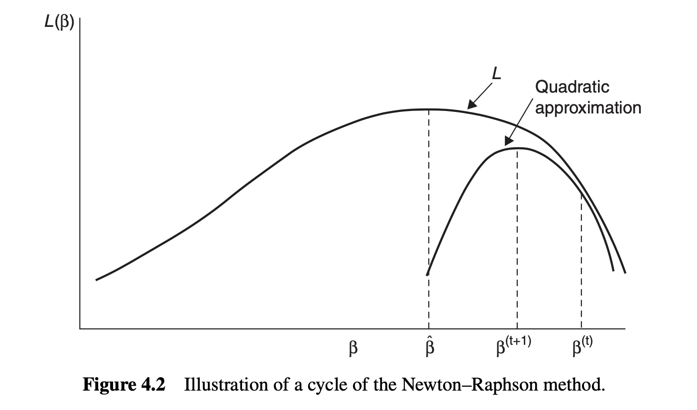
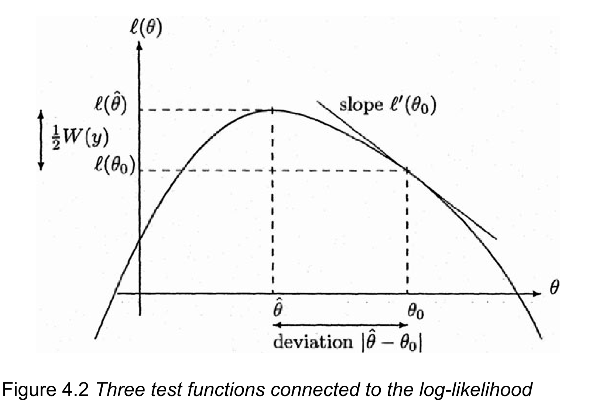
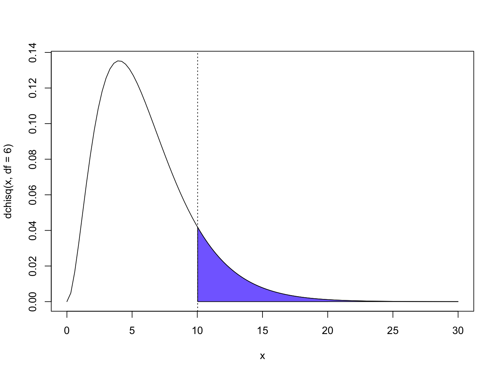
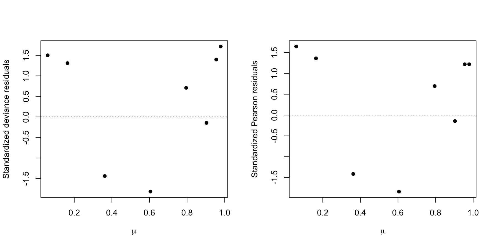
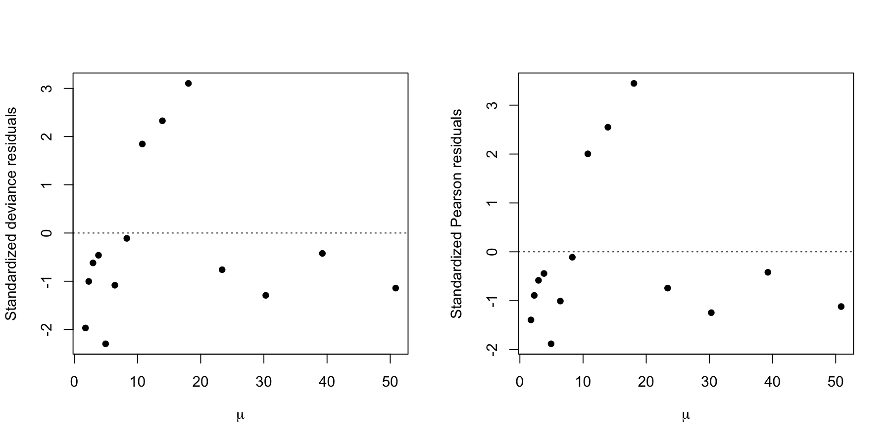
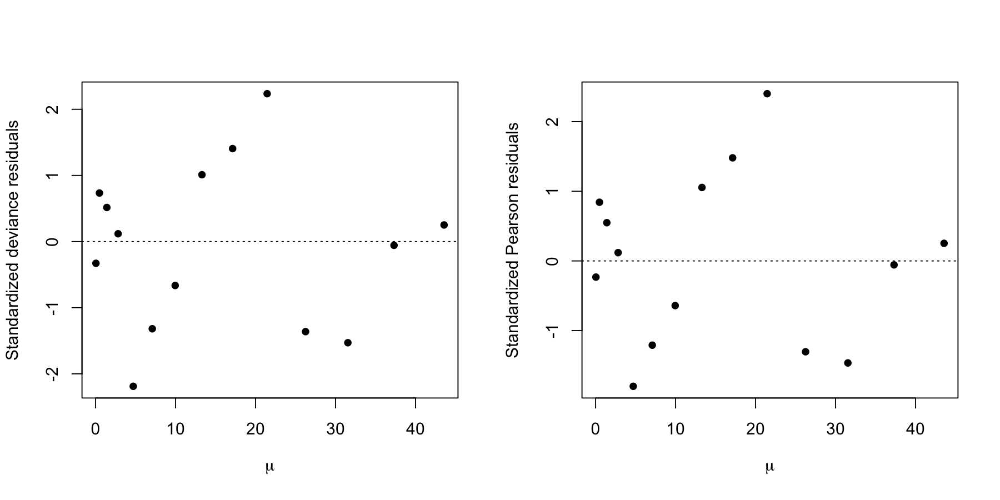

| m | deaths | logdose |
|---|---|---|
| 59 | 6 | 1.6907 |
| 60 | 13 | 1.7242 |
| 62 | 18 | 1.7552 |
| 56 | 28 | 1.7842 |
| 63 | 52 | 1.8113 |
| 59 | 53 | 1.8369 |
| 62 | 61 | 1.8610 |
| 60 | 60 | 1.8839 |
Generalized Linear Models
Statistics III - CdL SSE
Homepage

This unit will cover the following topics:
- Exponential dispersion families
- Likelihood, inference, and testing
- Iteratively Re-weighted Least Squares (IRLS)
- Deviance, model checking, and residuals
- Model selection
GLMs are regression models with a linear predictor, where the response variable follows an exponential dispersion family.
The symbol 📖 means that a few extra steps are discussed in the handwritten notes.
Introduction
Preliminaries
GLMs are a class of regression models in which a response random variable Y_i is modeled as a function of a vector of covariates \bm{x}_i \in \mathbb{R}^p.
The random variables Y_i are not restricted to be Gaussian. For example:
- Y_i \in \{0,1\}, known as binary regression
- Y_i \in \{0,1,\dots\}, known as count regression
- Y_i \in (0,\infty) or Y_i \in (-\infty,\infty)
- Y_i \in \{0,1\}, known as binary regression
Gaussian linear models are a special case of GLMs, arising when Y_i \in (-\infty,\infty).
The response random variables are collected in the random vector \bm{Y} = (Y_1,\dots,Y_n)^T, whose observed realization is \bm{y} = (y_1,\dots,y_n)^T.
The design matrix \bm{X} is an n \times p non-stochastic matrix containing the covariate values. The jth variable (column) is denoted by \tilde{\bm{x}}_j, while the ith observation (row) is \bm{x}_i.
We assume that \bm{X} has full rank, that is, \text{rk}(\bm{X}) = p with p \le n.
Beetles data, from Bliss (1935)
- The
Beetlesdataset originates from Bliss (1935). It records the number of adult flour beetles that died after a 5-hour exposure to gaseous carbon disulphide.
We aim to predict the proportion of
deathsas a function oflogdose.Modeling death proportions directly with linear models is inappropriate. A variable transformation provides a more principled solution, but it comes with drawbacks.
Beetles data, a dose-response plot

- There is a clear positive and non-linear pattern between the proportion of deaths as a function of the logdose. The response variable take values in [0, 1].
Modelling the Beetles data
Let S_i be the number of dead beetles out of m_i, and let x_i denote the log-dose. By definition, S_i \in \{0, 1, \dots, m_i\} for i = 1,\dots,8.
It is natural to model each S_i as independent binomial random variables, counting the number of deaths out of m_i individuals. In other words: S_i \overset{\text{ind}}{\sim} \text{Binomial}(m_i, \pi_i), \qquad i = 1,\dots,8, where \pi_i is the probability of death at a given dose x_i. Moreover, et Y_i = S_i / m_i be the proportion of deaths, then: \mathbb{E}(Y_i) = \mathbb{E}\left(\frac{S_i}{m_i}\right) = \pi_i = \mu_i.
A modeling approach, called logistic regression, specifies:
g(\pi_i) = \log\left(\frac{\pi_i}{1 - \pi_i}\right) = \beta_1 + \beta_2 x_i \quad \Longrightarrow \quad \pi_i = g^{-1}(\beta_1 + \beta_2 x_i) = \frac{\exp(\beta_1 + \beta_2 x_i)}{1 + \exp(\beta_1 + \beta_2 x_i)}. for some parameters \beta_1, \beta_2 \in \mathbb{R}. Note that \pi_i \in (0, 1) by construction.
Beetles data, fitted model

- The maximum likelihood estimates are \hat{\beta}_1 = -60.72 and \hat{\beta}_2 = 34.3. This yields the predictive curve \hat{\pi}(x) = g^{-1}(\hat{\beta}_1 + \hat{\beta}_2 x), which estimates the mean proportion \mathbb{E}(S_i / m_i).
A comparison with old tools I
The prediction \hat{\beta}_1 + \hat{\beta}_2 x_i is unrestricted, meaning it could produce values like “1.3” or “-2” as estimated proportions, which is clearly undesirable.
The additive structure Y_i = \beta_1 + \beta_2 x_i + \epsilon_i cannot hold with iid errors \epsilon_i, because S_i, and thus Y_i, are discrete. As a result, the errors are always heteroschedastic.
If m_i = 1, i.e. when the data are binary, all the above issues are exacerbated.
A comparison with old tools II
The interpretation of \hat{\beta} is less clear, as they refer to the mean of \text{logit}(\tilde{Y}_i) instead of \mathbb{E}(Y_i).
An arbitrary boundary correction is needed.
Inference is problematic and requires further corrections, because of heteroschedastic errors.
This approach is not compatible with the reasonable assumption S_i \sim \text{Binomial}(m_i, \pi_i).
A comparison with old tools III

- The black line is the predicted curve of a logistic regression GLM. The orange line is the predictived curve of a linear model. The blue line is the predictive curve of a linear model after an empirical logit variable transformation.
Aids data
- Number of AIDS
deathsin Australia in a sequence of three-months periods between 1983 and 1986.
| 1983-1 | 1984-1 | 1985-1 | 1986-1 | 1983-2 | 1984-2 | 1985-2 | |
|---|---|---|---|---|---|---|---|
| deaths | 0 | 1 | 2 | 3 | 1 | 4 | 8 |
| period | 1 | 2 | 3 | 4 | 5 | 6 | 7 |
| 1986-2 | 1983-3 | 1984-3 | 1985-3 | 1986-3 | 1983-4 | 1984-4 | |
|---|---|---|---|---|---|---|---|
| deaths | 17 | 23 | 32 | 20 | 24 | 37 | 45 |
| period | 8 | 9 | 10 | 11 | 12 | 13 | 14 |
We are interested in predicting the number of
deathsas a function of theperiodof time.The response variable Y_i \in \{0, 1, \dots\} is a non-negative count.
Aids data, scatter plot

- There is a clear positive association between period and deaths. However, the increase appears to be faster than linear. Note that both the mean and the variability of Y_i increase over time.
Modelling the Aids data
- Let Y_i be the number of deaths, and let x_i denote the period. By definition, Y_i \in \{0, 1, \dots\} are non-negative counts, for i = 1,\dots,14.
We model Y_i as independent Poisson random variables, counting the number of deaths: Y_i \overset{\text{ind}}{\sim} \text{Poisson}(\mu_i), \qquad i = 1,\dots,14, where \mu_i is the mean of Y_i, namely \mathbb{E}(Y_i) = \mu_i.
A modeling approach, called Poisson regression, specifies:
g(\mu_i) = \log(\mu_i) = \beta_1 + \beta_2 x_i \quad \Longrightarrow \quad \mu_i = g^{-1}(\beta_1 + \beta_2 x_i) = \exp(\beta_1 + \beta_2 x_i), for some parameters \beta_1, \beta_2 \in \mathbb{R}. Note that \mu_i > 0 by construction.Under this specification, the variances of the observations are
\text{var}(Y_i) = \mu_i = \exp(\beta_1 + \beta_2 x_i), which increases with x, as desired. This implies that Y_1,\dots,Y_n are heteroschedastic, but this is not an issue in GLMs, as this aspect is automatically accounted for.
Aids data, fitted model

- The maximum likelihood estimates are \hat{\beta}_1 = 0.304 and \hat{\beta}_2 = 0.259. This yields the predictive curve \hat{\mu}(x) = \exp(\hat{\beta}_1 + \hat{\beta}_2 x), which estimates the mean \mathbb{E}(Y_i).
A comparison with old tools I
The interpretation of \hat{\beta} is less clear, as they refer to the mean of \sqrt{Y}_i instead of \mathbb{E}(Y_i).
This approach is not compatible with the reasonable assumption Y_i \sim \text{Poisson}(\mu_i) and it only valid as an asymptotic approximation.
A comparison with old tools II

- The black line is the predicted curve of a Poisson regression GLM with logarithmic link. The orange line is the predicted curve of a linear model with a square-root transformation. The blue line is the predictive curve of a Poisson regression GLM with square-root link.
The components of a GLM
- Random component. This specifies the probability distribution response variable Y_i. The observations \bm{y} =(y_1,\dots,y_n) on that distribution are treated as independent.
- Linear predictor. For a parameter vector \bm{\beta} = (\beta_1,\dots,\beta_p)^T and an n \times p design matrix \bm{X}, the linear predictor is \bm{\eta} = \bm{X}\beta. We will also write \eta_i = \bm{x}_i^T\beta = x_{i1}\beta_1 + \cdots + x_{ip}\beta_p, \qquad i=1,\dots,n.
- Link function. This is an invertible and differentiable function g(\cdot) applied to each component of the mean \mu_i = \mathbb{E}(Y_i) that relates it to the linear predictor: g(\mu_i) = \eta_i = \bm{x}_i^T\beta, \qquad \Longrightarrow \qquad \mu_i = g^{-1}(\eta_i) = g^{-1}(\bm{x}_i^T\beta).
Random component of a GLM
In GLMs the random variables Y_i are independent and they are distributed according to an exponential dispersion family, whose definition will be provided in a few slides.
The distributions most commonly used in Statistics, such as the normal, binomial, gamma, and Poisson, are exponential family distributions.
Exponential dispersion families are characterized by their mean and variance. Let v(\mu) > 0 be a function of the mean, called variance function and let a_i(\phi) >0 be functions of an additional unknown parameter \phi > 0 called dispersion.
Notable examples
Exponential dispersion families
Overview
- Figure 1 of Efron (2023). Three level of statistical modeling.

The prime role of exponential families in the theory of statistical inference was first emphasized by Fisher (1934).
Most well-known distributions—such as Gaussian, Poisson, Binomial, and Gamma—are instances of exponential families.
Exponential dispersion family: definition
By specifying the functions a_i(\cdot), b(\cdot) and c(\cdot) one obtain a particular parametric model.
The support \mathcal{Y} of Y_i does not depend on the parameters \phi or \theta_i and b(\cdot) can be differentiated infinitely many times. In particular, this is a regular statistical model.
As mentioned, special cases are a_i(\phi) = \phi and a_i(\phi) = 1. When a_i(\phi) = 1 and c(y_i, \phi) = c(y_i) we obtain p(y_i; \theta_i) = \exp\left\{\theta_i y_i - b(\theta_i) + c(y_i)\right\}, which is called natural exponential family of order 1.
Mean and variance I 📖
Let us consider the log-likelihood contribution of the ith observations, which is defined as \ell(\theta_i, \phi; y_i) = \log{p(y_i; \theta_i, \phi)} = \frac{\theta_i y_i - b(\theta_i)}{a_i(\phi)} + c(y_i, \phi). If you prefer, this is the log-likelihood when the sample size n = 1 and we only observe Y_i.
The score and hessian functions, namely the first and second derivative over \theta_i are \frac{\partial}{\partial \theta_i} \ell(\theta_i, \phi; y_i) = \frac{y_i - b'(\theta_i)}{a_i(\phi)}, \qquad \frac{\partial^2}{\partial \theta_i^2}\ell(\theta_i, \phi; y_i) = \frac{-b''(\theta_i)}{a_i(\phi)}. where b'(\cdot) and b''(\cdot) denote the first and second derivative of b(\cdot).
Recall the following Bartlett identities, valid in any regular statistical model: \begin{aligned} \mathbb{E}\left(\frac{\partial}{\partial \theta_i} \ell(\theta_i, \phi; Y_i) \right) &= 0, \\ \mathbb{E}\left\{\left(\frac{\partial}{\partial \theta_i} \ell(\theta_i, \phi; Y_i) \right)^2\right\} = \text{var}\left(\frac{\partial}{\partial \theta_i} \ell(\theta_i, \phi; Y_i) \right) &= \mathbb{E}\left(-\frac{\partial^2}{\partial \theta_i^2}\ell(\theta_i, \phi; Y_i)\right). \end{aligned}
Mean and variance II 📖
- Specializing Bartlett identities in exponential dispersion families, we obtain \mathbb{E}\left(\frac{Y_i - b'(\theta_i)}{a_i(\phi)}\right) = 0, \qquad \text{var}\left(\frac{Y_i - b'(\theta_i)}{a_i(\phi)}\right) = \frac{\text{var}(Y_i)}{a_i(\phi)^2} = \frac{b''(\theta_i)}{a_i(\phi)}. Re-arranging the terms, we finally get the following key result.
The mean \mu_i = b'(\theta_i) does not depend on the dispersion parameter.
We have b''(\cdot) > 0 because \text{var}(Y_i), which means that b(\cdot) is a convex function.
Moreover, the function b'(\theta) is continuous and monotone increasing and hence invertible.
The function b(\cdot) is related to the moment generating function of Y_i. Thus, higher order derivatives of b(\cdot) allows the calculations of skewness, kurtosis, etc.
Mean parametrization, variance function
The inverse relationship, re-obtaining \theta_i as a function of \mu_i, is denoted with \theta_i = \theta(\mu_i) = b'^{-1}(\mu_i).
Using this notation, we can express the variance of Y_i as a function of \mu_i as follows \text{var}(Y_i) = a_i(\phi)b''(\theta_i) = a_i(\phi)b''(\theta(\mu_i)) = a_i(\phi)v(\mu_i), where v(\mu_i) := b''(\theta(\mu_i)) is the variance function.
The domain \mathcal{M} and the variance function v(\mu) characterize the function b(\cdot) and the entire distribution, for any given a_i(\phi). This justifies the notation Y_i \sim \text{ED}(\mu_i, a_i(\phi)v(\mu_i)).
Gaussian distribution 📖
Let Y_i \sim \text{N}(\mu_i, \sigma^2). The density function of Y_i can be written as \begin{aligned} p(y_i; \mu_i, \sigma^2) &= \frac{1}{\sqrt{2 \pi \sigma^2}}\exp\left\{-\frac{1}{2\sigma^2}(y_i - \mu_i)^2\right\} \\ &=\exp\left\{\frac{y_i \mu_i - \mu_i^2/2}{\sigma^2}- \frac{\log(2\pi\sigma^2)}{2}-\frac{y_i^2}{2\sigma^2}\right\} \end{aligned}
Then, we can recognize the following relationships: \theta_i = \theta(\mu_i) = \mu_i, \quad a_i(\phi) = \phi = \sigma^2, \quad b(\theta_i) = \frac{\theta_i^2}{2}, \quad c(y_i, \phi) = - \frac{\log(2\pi\phi)}{2}-\frac{y_i^2}{2\phi}. In the Gaussian case, the mean parametrization and the natural parametrization coincide. Moreover, the dispersion \phi coincides with the variance \sigma^2.
Using the results we previously discussed, we obtain the well-known relationships \mathbb{E}(Y_i) = b'(\theta_i) = \theta_i, \qquad \text{var}(Y_i) = a_i(\phi)b''(\theta_i) = \phi. The variance function v(\mu_i) = 1 is constant. We will write Y_i \sim \text{ED}(\mu_i, \phi) with \mu_i \in \mathcal{M} = \mathbb{R}.
Poisson distribution 📖
Let Y_i \sim \text{Poisson}(\mu_i). The pdf function of Y_i can be written as \begin{aligned} p(y_i; \mu_i) &= \frac{\mu_i^{y_i} e^{-\mu_i}}{y_i!}=\exp\{y_i \log(\mu_i) - \mu_i - \log(y_i!)\} \\ &=\exp\{y_i \theta_i - e^{\theta_i} - \log(y_i!)\}, \qquad y_i = 0, 1, 2,\dots. \end{aligned}
Then, we can recognize the following relationships: \begin{aligned} \theta_i &= \theta(\mu_i) = \log(\mu_i), \quad &&a_i(\phi) = 1, \\ b(\theta_i) &= e^{\theta_i}, \quad &&c(y_i, \phi) = c(y_i) = -\log(y_i!). \end{aligned} There is no dispersion parameter since a_i(\phi) = 1.
Using the results we previously discussed, we obtain the well-known relationships \begin{aligned} \mathbb{E}(Y_i) &= b'(\theta_i) = e^{\theta_i} = \mu_i, \\ \text{var}(Y_i) &= a_i(\phi) b''(\theta_i) = e^{\theta_i} = \mu_i. \end{aligned} The variance function v(\mu_i) = \mu_i is linear. We will write Y_i \sim \text{ED}(\mu_i, \mu_i) with \mu_i \in (0, \infty).
Gamma distribution I 📖
Let Y_i \sim \text{Gamma}(\alpha, \lambda_i). The density function of Y_i can be written as \begin{aligned} p(y_i; \alpha, \lambda_i) &= \frac{\lambda_i^\alpha y_i^{\alpha-1} e^{-\lambda_i y_i}}{\Gamma(\alpha)} \\ &=\exp\left\{\alpha\log{\lambda_i} - \lambda_i y_i + (\alpha-1)\log{y_i} - \log{\Gamma}(\alpha)\right\} \\ &=\exp\left\{\alpha\left(\log{\lambda_i} - \frac{\lambda_i}{\alpha} y_i\right) + (\alpha-1)\log{y_i} - \log{\Gamma}(\alpha)\right\} \\ &=\exp\left\{\frac{\theta_i y_i + \log(-\theta_i)}{\phi} - (1/\phi)\log{\phi}+ (1/\phi - 1)\log{y_i} - \log{\Gamma}(1/\phi)\right\}, \qquad y > 0,\\ \end{aligned} having defined the dispersion \phi = 1/\alpha and the natural parameter \theta_i = -\lambda_i/\alpha.
Then, we can recognize the following relationships: \begin{aligned} \quad a_i(\phi) &= \phi, \qquad b(\theta_i) = - \log(-\theta_i), \\ c(y_i, \phi) &= - (1/\phi)\log{\phi}+ (1/\phi - 1)\log{y_i} - \log{\Gamma}(1/\phi). \end{aligned}
Gamma distribution II 📖
Using the results we previously discussed, we obtain the well-known relationships \mathbb{E}(Y_i) = b'(\theta_i) = - \frac{1}{\theta_i} = \frac{\alpha}{\lambda_i} = \mu_i, \qquad \text{var}(Y_i) = a_i(\phi)b''(\theta_i) = \frac{\phi}{\theta_i^2} = \frac{\alpha}{\lambda_i^2}.
At the same time, we can write the inverse relationship linking \theta_i to the mean as \theta_i = \theta(\mu_i) = - \frac{1}{\mu_i} from which we finally obtain the following quadratic variance function v(\mu_i) = \mu_i^2.
We will write Y_i \sim \text{ED}(\mu_i, \phi\mu_i^2) with \mu_i \in (0, \infty).
Binomial distribution I 📖
- Let S_i \sim \text{Binomial}(m_i, \pi_i), with \pi_i \in (0, 1). The random variable Y_i = S_i/m_i has density \begin{aligned} p(y_i; m_i, \pi_i) &= \binom{m_i}{m_i y_i}\pi_i^{m_i y_i}(1 - \pi_i)^{m_i - m_i y_i}\\ &=\binom{m_i}{m_i y_i}\left(\frac{\pi_i}{1 - \pi_i}\right)^{m_i y_i}(1 - \pi_i)^{m_i}\\ &=\exp\left\{m_iy_i\log\left(\frac{\pi_i}{1 - \pi_i}\right) + m_i\log(1 - \pi_i) + \log\binom{m_i}{m_i y_i}\right\}, \end{aligned} for y_i \in \{0, 1/m_i, 2/m_2, \dots, m_i/m_i\}. This can be written as p(y_i; m_i, \pi_i) =\exp\left\{\frac{y_i\theta_i - \log\{1 + \exp(\theta_i)\}}{1/m_i}+ \log\binom{m_i}{m_i y_i}\right\}, where the natural parameter is \theta_i = \text{logit}(\pi_i) = \log\{\pi/(1-\pi_i)\}.
Binomial distribution II 📖
Note that \mathbb{E}(Y_i) = \mathbb{E}(Z_i / m_i) = \pi_i = \mu_i. This means there no dispersion parameter \phi and \theta_i = \text{logit}(\mu_i), \quad a_i(\phi) = \frac{1}{m_i}, \quad b(\theta_i) = \log\{1 + \exp(\theta_i)\}, \quad c(y_i) = \log\binom{m_i}{m_i y_i}.
Using the general formulas therefore we obtain \begin{aligned} \mathbb{E}(Y_i) &= b'(\theta_i) = \frac{\exp(\theta_i)}{1 + \exp(\theta_i)} = \mu_i, \\ \text{var}(Y_i) &= a_i(\phi)b''(\theta_i) = \frac{1}{m_i}\frac{\exp(\theta_i)}{[1 + \exp(\theta_i)]^2} = \frac{\mu_i (1 - \mu_i)}{m_i}, \end{aligned} from which we obtain that the variance function is v(\mu_i) = \mu_i(1-\mu_i) is quadratic.
We will write Y_i \sim \text{ED}(\mu_i, \mu_i(1-\mu_i)/m_i) with \mu_i \in \mathcal{M} = (0, 1).
Notable exponential dispersion families
| Model | \text{N}(\mu_i, \sigma^2) | \text{Gamma}(\alpha, \alpha/\mu_i) | \frac{1}{m_i}\text{Binomial}(m_i, \mu_i) | \text{Poisson}(\mu_i) |
|---|---|---|---|---|
| Support \mathcal{Y} | \mathbb{R} | [0, \infty) | \{0, 1/m_i,\dots, 1\} | \mathbb{N} |
| \theta_i | \mu_i | - 1/\mu_i | \log\left(\frac{\mu_i}{1 - \mu_i}\right) | \log{\mu_i} |
| Parametric space \Theta | \mathbb{R} | (-\infty, 0) | \mathbb{R} | \mathbb{R} |
| b(\theta_i) | \theta_i^2/2 | -\log(-\theta_i) | \log\{1 + \exp(\theta_i)\} | \exp(\theta_i) |
| \phi | \sigma^2 | 1/\alpha | 1 | 1 |
| a_i(\phi) | \sigma^2 | 1/\alpha | 1/m_i | 1 |
| \mathcal{M} | \mathbb{R} | (0, \infty) | (0, 1) | (0, \infty) |
| v(\mu_i) | 1 | \mu_i^2 | \mu_i(1-\mu_i) | \mu_i |
Link functions and canonical link
To complete the GLM specification, we need to choose a link function g(\cdot) such that: g(\mu_i) = \bm{x}_i^T\beta, \qquad \theta_i = \theta(\mu_i) \quad \Longrightarrow \quad \theta_i = \theta(g^{-1}(\bm{x}_i^T\beta)).
It is fairly natural to consider a monotone and differentiable link function g(\cdot) : \mathcal{M} \to \mathbb{R} so that the inverse g^{-1}(\cdot) : \mathbb{R} \to \mathcal{M}. This ensures that the predictions are well-defined. \mathbb{E}(Y_i) = g^{-1}(\bm{x}_i^T\beta) \in \mathcal{M}.
For example, in binary regression any continuous cumulative distribution function for g^{-1}(\cdot) leads to a good link function, such as g(\cdot) = \Phi(\cdot) (probit) or g^{-1}(\eta_i) = e^{\eta_i}/(1 + e^{\eta_i}) (logistic).
- The identity link is canonical for the Gaussian, the logarithm is canonical for the Poisson, the logit is canonical for the Binomial and the reciprocal is canonical for the Gamma.
Likelihood quantities
Likelihood function
Let Y_i \overset{\text{ind}}{\sim}\text{ED}(\mu_i, a_i(\phi)v(\mu_i)) be the response variable of a GLM, with g(\mu_i) = \bm{x}_i^T\beta. The joint distribution of the responses \bm{Y} = (Y_1,\dots,Y_n) is p(\bm{y}; \beta, \phi) = \prod_{i=1}^np(y_i; \beta, \phi) = \prod_{i=1}^n \exp\left\{\frac{y_i\theta_i - b(\theta_i)}{a_i(\phi)} + c(y_i, \phi)\right\}. with \theta_i = \theta(\mu_i) = \theta(g^{-1}(\bm{x}_i^T\beta)).
The log-likelihood function therefore is \ell(\beta, \phi) = \sum_{i=1}^n\frac{y_i\theta_i - b(\theta_i)}{a_i(\phi)} + c(y_i, \phi).
- In general, there is no sufficient statistic with dimension smaller than n.
Likelihood equations I 📖
To conduct inference using the classical theory (as in Statistica II), we need to consider the first and second derivative of the log-likelihood, that is, the score function \ell_*(\beta;\phi) := \frac{\partial}{\partial \beta}\ell(\beta, \phi), and the observed information matrix \bm{J}, whose elements are j_{rs} = - \frac{\partial}{\partial \beta_r}\frac{\partial}{\partial \beta_s}\ell(\beta, \phi), \qquad r, s=1,\dots,p.
These quantities have a simple expression in the end, but getting there requires quite a bit of calculus.
Likelihood equations II 📖
Let us begin by noting that \ell_r(\beta;\phi) = \frac{\partial}{\partial \beta_r}\ell(\beta, \phi) = \sum_{i=1}^n\frac{1}{a_i(\phi)} \left(y_i \frac{\partial \theta_i}{\partial \beta_r} - \frac{\partial b(\theta_i)}{\partial \beta_r} \right), \qquad r = 1,\dots,p. Such an expression can be simplified because \frac{\partial b(\theta_i)}{\partial \beta_r} = b'(\theta_i)\frac{\partial \theta_i}{\partial \beta_r} = \mu_i\frac{\partial \theta_i}{\partial \beta_r}, which implies that the score function will have the following structure: \frac{\partial}{\partial \beta_r}\ell(\beta, \phi) = \sum_{i=1}^n\frac{1}{a_i(\phi)}(y_i - \mu_i)\frac{\partial \theta_i}{\partial \beta_r}, \qquad r=1,\dots,p.
Recall that a_i(\phi) = \phi/\omega_i, hence the maximum likelihood estimator is obtained by solving: \textcolor{red}{\cancel{\frac{1}{\phi}}}\sum_{i=1}^n\omega_i(y_i - \mu_i)\frac{\partial \theta_i}{\partial \beta_r} = 0, \qquad r=1,\dots,p.
Likelihood equations III 📖
- Recall that g(\mu_i) = \bm{x}_i^T\beta = \eta_i and that \theta_i = \theta(\mu_i) is the inverse of \mu(\theta_i). As an application of the above lemma: \frac{\partial \theta_i}{\partial \mu_i} = \theta'(\mu_i) = \frac{1}{\mu'(\theta(\mu_i))}= \frac{1}{b''(\theta(\mu_i))} = \frac{1}{v(\mu_i)}, Moreover, since we \mu_i = g^{-1}(\eta_i) we obtain \frac{\partial \mu_i}{\partial \eta_i} = \frac{1}{g'(g^{-1}(\eta_i))} = \frac{1}{g'(\mu_i)}.
- Summing up, the chain rule of derivation for composite functions gives: \frac{\partial \theta_i}{\partial \beta_r} = \frac{\partial \theta_i}{\partial \mu_i} \frac{\partial \mu_i}{\partial \eta_i} \frac{\partial \eta_i}{\partial\beta_r} = \frac{1}{v(\mu_i)}\frac{1}{g'(\mu_i)}x_{ir}, \qquad r=1,\dots,p.
Likelihood equations IV 📖
- Combining all the above equations, we obtain an explicit formula for the score function \frac{\partial}{\partial \beta_r}\ell(\beta, \phi) = \frac{1}{\phi}\sum_{i=1}^n \omega_i \frac{(y_i - \mu_i)}{v(\mu_i)}\frac{x_{ir}}{g'(\mu_i)} = \sum_{i=1}^n \frac{(y_i - \mu_i)}{\text{var}(Y_i)}\frac{x_{ir}}{g'(\mu_i)}, \qquad r=1,\dots,p.
Canonical link: simplifications 📖
- When using the canonical link \theta(\mu_i) = g(\mu_i) significant simplifications arise, because \frac{\partial \theta_i}{\partial \mu_i}= \frac{1}{v(\mu_i)} = g'(\mu_i) \quad \Longrightarrow\quad v(\mu_i)g'(\mu_i) = 1. Thus, plugging-in this equality in the former equations, gives: \frac{\partial \theta_i}{\partial \beta_r} = x_{ir}, \qquad r=1,\dots,p, which is not surprising, because the canonical link implies \theta_i = x_{i1}\beta_1 + \cdots + x_{ip}\beta_p.
Examples of estimating equations
Example: Beetles data
Using the
Beetlesdata, we specified a binomial logistic regression model for the counts m_i Y_i \sim \text{Binomial}(m_i, \pi_i) with mean \mathbb{E}(Y_i) = \pi_i = \exp(\beta_1 + \beta_2 x_i)/(1 + \exp(\beta_1 + \beta_2 x_i)).The maximum likelihood estimate (\hat{\beta}_1, \hat{\beta}_2) is the value solving simultaneously: \sum_{i=1}^n m_i y_i = \sum_{i=1}^n m_i \frac{\exp(\beta_1 + \beta_2x_i)}{1 + \exp(\beta_1 + \beta_2x_i)}, \quad \text{and}\quad \sum_{i=1}^n m_i x_i y_i = \sum_{i=1}^n m_i x_i \frac{\exp(\beta_1 + \beta_2x_i)}{1 + \exp(\beta_1 + \beta_2x_i)}. Unfortunately, there is no closed form solution.
In our case, we have that \sum_{i=1}^n m_i y_i = 291, \qquad \sum_{i=1}^n m_i x_i y_i = 532.2083.
With these values, we can use the numerical algorithm IRLS to solve the above system, obtaining \hat{\beta} = (\hat{\beta}_1, \hat{\beta_2}) = (-60.717, 34.270).
Example: Beetles data
- The predicted response can be computed by using the formula \hat{\mu}_i = \frac{\exp(\hat{\beta}_1 + \hat{\beta}_2x_i)}{1 + \exp(\hat{\beta}_1 + \hat{\beta}_2x_i)} = \frac{\exp(-60.717 + 34.270 x_i)}{1 + \exp(-60.717 + 34.270 x_i)}, \qquad i=1,\dots, 8.
| m_i | deaths (S_i) |
logdose (x_i) |
Y_i = S_i / m_i | \hat{\mu}_i |
|---|---|---|---|---|
| 59 | 6 | 1.691 | 0.102 | 0.059 |
| 60 | 13 | 1.724 | 0.217 | 0.164 |
| 62 | 18 | 1.755 | 0.290 | 0.362 |
| 56 | 28 | 1.784 | 0.500 | 0.605 |
| 63 | 52 | 1.811 | 0.825 | 0.795 |
| 59 | 53 | 1.837 | 0.898 | 0.903 |
| 62 | 61 | 1.861 | 0.984 | 0.955 |
| 60 | 60 | 1.884 | 1.000 | 0.979 |
- The predicted values and the data Y_i were also shown in a plot at the beginning of this unit.
Example: Aids data
In the
Aidsdata, we specified a Poisson regression model with \mathbb{E}(Y_i) = \exp(\beta_1 + \beta_2 x_i).The maximum likelihood estimate (\hat{\beta}_1, \hat{\beta}_2) solve simultaneously: \sum_{i=1}^n y_i = \sum_{i=1}^n \exp(\beta_1 + \beta_2x_i), \quad \text{and}\quad \sum_{i=1}^n x_i y_i = \sum_{i=1}^n x_i\exp(\beta_1 + \beta_2 x_i).
This system does not always admits a solution. This happens, for example, in the extreme case \sum_{i=1}^ny_i = 0, occurring when all counts equal zero.
Using the
Aidsdata we have \sum_{i=1}^ny_i = 217 and \sum_{i=1}^nx_i y_i = 2387. Via numerical methods we solve the above system of equations and we obtain \hat{\beta}_1 = 0.304 and \hat{\beta}_2 = 0.259.The estimated mean values are \hat{\mu}_i = \exp(0.304 + 0.259 x_i) and in particular the mean for the next period is \hat{\mu}_{i+1} = \exp(0.304 + 0.259 (x_i +1)) = \exp(0.259) \hat{\mu}_i = 1.296 \hat{\mu}_i. In other words, the estimated number of deaths increases by about 30\% every trimester.
Example: Aids data
deaths (Y_i) |
period (x_i) |
\hat{\mu}_i | |
|---|---|---|---|
| 1983-1 | 0 | 1 | 1.755 |
| 1984-1 | 1 | 2 | 2.274 |
| 1985-1 | 2 | 3 | 2.946 |
| 1986-1 | 3 | 4 | 3.817 |
| 1983-2 | 1 | 5 | 4.945 |
| 1984-2 | 4 | 6 | 6.407 |
| 1985-2 | 8 | 7 | 8.301 |
| 1986-2 | 17 | 8 | 10.755 |
| 1983-3 | 23 | 9 | 13.934 |
| 1984-3 | 32 | 10 | 18.052 |
| 1985-3 | 20 | 11 | 23.389 |
| 1986-3 | 24 | 12 | 30.302 |
| 1983-4 | 37 | 13 | 39.259 |
| 1984-4 | 45 | 14 | 50.863 |
- The predicted values and the data Y_i were also shown in a plot at the beginning of this unit.
Observed and expected information I 📖
Let us first consider the negative derivative of the score function, that is the observed information matrix \bm{J} with entries: \begin{aligned} j_{rs} &= -\frac{\partial}{\partial \beta_s}\left[\frac{\partial}{\partial \beta_r}\ell(\beta, \phi)\right] = -\frac{\partial}{\partial \beta_s}\sum_{i=1}^n\frac{1}{a_i(\phi)}(y_i - \mu_i)\frac{\partial \theta_i}{\partial \beta_r} \\ &=\sum_{i=1}^n\frac{1}{a_i(\phi)}\left[\frac{\partial\mu_i}{\partial \beta_s}\frac{\partial\theta_i}{\partial \beta_r} - (y_i - \mu_i) \frac{\partial^2\theta_i}{\partial \beta_r \partial \beta_s}\right], \qquad r,s = 1,\dots,p. \end{aligned}
Let \bm{I} = \mathbb{E}(\bm{J}) be the p \times p Fisher information matrix associated with \beta, whose elements are i_{rs} = \mathbb{E}(j_{rs}) = \mathbb{E}\left(- \frac{\partial}{\partial \beta_r}\frac{\partial}{\partial \beta_s}\ell(\beta, \phi)\right), \qquad r,s = 1,\dots,p.
Thus, the Fisher information matrix substantially simplifies because \mathbb{E}(Y_i) = \mu_i, obtaining: i_{rs} = \sum_{i=1}^n\frac{1}{a_i(\phi)}\frac{\partial\mu_i}{\partial \beta_s}\frac{\partial\theta_i}{\partial \beta_r}, \qquad r,s = 1,\dots,p.
Observed and expected information II 📖
- In the previous slides we already computed the explicit values of these derivatives: \frac{\partial\mu_i}{\partial \beta_s} = \frac{x_{is}}{g'(\mu_i)}, \qquad \frac{\partial\theta_i}{\partial \beta_r} = \frac{x_{is}}{v(\mu_i) g'(\mu_i)}.
Canonical link: simplifications 📖
Further considerations
- The observed and expected information matrices \bm{J} and \bm{I}, as well as weights \bm{W}, depend on \beta and \phi. We write \hat{\bm{J}}, \hat{\bm{I}} and \hat{\bm{W}} to indicate that \beta and \phi have been estimated with \hat{\beta} and \hat{\phi}.
- If \bm{X} has full rank and g'(\mu) \neq 0, then \bm{I} is positive definite for any value of \beta and \phi.
Under the canonical link, we have \bm{J} = \bm{I}, and both matrices are positive definite if \text{rk}(\bm{X}) = p.
This implies that the log-likelihood function is concave because its second derivative is negative definite, so any solution to the estimating equations is also a global optimum.
- The Fisher information matrix could be computed exploiting Bartlett identity, namely i_{rs} = \mathbb{E}\left[\left(\frac{\partial}{\partial \beta_r}\ell(\beta, \phi)\right)\left(\frac{\partial}{\partial \beta_s}\ell(\beta, \phi)\right)\right], \qquad r,s = 1,\dots,p. as in Agresti (2015). Of course, the final result coincide with ours.
☠️ - Orthogonality of \beta and \psi
- Let us now consider the case in which \phi is unknown so that a_i(\phi) = \phi/\omega_i. We obtain: j_{r \phi} = - \frac{\partial}{\partial \beta_r}\frac{\partial}{\partial \phi}\ell(\beta, \phi) = \frac{1}{\phi^2}\sum_{i=1}^n \omega_i(y_i - \mu_i)\frac{\partial \theta_i}{\partial \beta_r}, \qquad r = 1,\dots,p. whose expected value is i_{r\phi} = \mathbb{E}(j_{r\phi}) = 0 since \mathbb{E}(Y_i) = \mu_i.
- This means the Fisher information matrix accounting for \phi takes the form: \begin{pmatrix} \bm{I} & \bm{0} \\ \bm{0} & i_{\phi \phi} \end{pmatrix} \qquad\Longrightarrow\qquad \begin{pmatrix} \bm{I} & \bm{0} \\ \bm{0} & i_{\phi \phi} \end{pmatrix}^{-1} = \begin{pmatrix} \bm{I}^{-1} & \bm{0} \\ \bm{0} & 1 /i_{\phi \phi} \end{pmatrix} where [\bm{I}]_{rs} = i_{rs} are the elements associated to \beta as before.
IRLS algorithm
Numerical methods for maximum likelihood estimation
In general, the estimating equations of a GLM \bm{D}^T \bm{V}^{-1}(\bm{y} - \bm{\mu}) = \bm{0} cannot be solved in closed form and we need to rely on numerical methods.
An iterative method means that we start the algorithm with a candidate value \beta^{(1)} (initialization). Then, at the step t we update \beta^{(t+1)} = \texttt{update}(\beta^{(t)}), \qquad t=1,2,\dots
The algorithm stops whenever a certain criteria is met, e.g. when ||\beta^{(t+1)} - \beta^{(t)}|| < \epsilon, where \epsilon is sometimes called tolerance. We say it reached convergence.
The iteratively re-weighted least squares (IRLS) algorithm became very popular after being proposed by Nelder and Wedderburn (1972) and is currently implemented in R.
The IRLS algorithm can be used for any GLM, has a clear geometric interpretation, and often delivers good performance. It can be seen as a variant of Newton-Raphson.
Newton-Raphson algorithm I
In the Newton-Raphson algorithm, we consider a second-order Taylor expansion of the log-likelihood \ell(\beta) = \ell(\beta,\phi) centered in \beta^{(t)}, namely: \ell(\beta) \approx \ell(\beta^{(t)}) + \ell_*(\beta^{(t)})^T(\beta - \beta^{(t)}) - \frac{1}{2}(\beta - \beta^{(t)})^T\bm{J}^{(t)} where \ell_*(\beta^{(t)}) is the score function and \bm{J}^{(t)} is the observed information, evaluated at \beta^{(t)}.
In other words, we approximate the log-likelihood \ell(\beta) with a parabola. This gives the approximate likelihood equations: \ell_*(\beta^{(t)}) - \bm{J}^{(t)}(\beta - \beta^{(t)}) = \bm{0}.
Solving the equation above gives the following updates: \beta^{(t+1)} = \hat{\beta}^{(t)} + (\bm{J}^{(t)})^{-1}\ell_*(\beta^{(t)}), \qquad t=1,2,\dots
Newton-Raphson algorithm II

- Figure taken from Agresti (2015).
Iteratively re-weighted least squares I 📖
- The matrix \bm{J}^{(t)} is not always invertible, therefore the algorithm may crash. To remedy this, we replace it with the expected information \bm{I}^{(t)}.
- The above formula can simplified a bit. First, we rewrite the score as \frac{\partial}{\partial \beta_r}\ell(\beta, \phi) = \frac{1}{\phi}\sum_{i=1}^n \omega_i \frac{(y_i - \mu_i)}{v(\mu_i)}\frac{x_{ir}}{g'(\mu_i)} = \sum_{i=1}^nx_{ir} w_i (y_i - \mu_i)g'(\mu_i), where the weights were defined as w_i = \omega_i / (\phi v(\mu_i) g'(\mu_i)^2). In matrix notation we will write: \ell_*(\beta^{(t)}) = \bm{X}^T\bm{W}^{(t)}\bm{u}^{(t)}, \qquad \bm{I}^{(t)} = \bm{X}^T\bm{W}^{(t)}\bm{X}, where \bm{u}^{(t)} =(u_1^{t},\dots,u_n^{(t)})^T and u_i^{(t)} = (y_i - \mu_i^{(t)})g'(\mu_i^{(t)}) for i=1,\dots,n.
Iteratively re-weighted least squares II 📖
- Exploiting the former formulas, we can write the IRLS update as follows \beta^{(t+1)} = \beta^{(t)} + (\bm{X}^T\bm{W}^{(t)}\bm{X})^{-1}\bm{X}^T\bm{W}^{(t)}\bm{u}^{(t)}. Now multiply both sides by (\bm{X}^T\bm{W}^{(t)}\bm{X}), simplify and re-arrange the resulting terms. This gives the following formula.
Iteratively re-weighted least squares III 📖
- The IRLS updates does not depend on the choice of \phi, because it cancels in the multiplications, as we would expect.
The pseudo-responses have a nice interpretation, because they can be interpreted as a linear approximation of the transformed responses: g(y_i) \approx g(\mu_i) + (y_i - \mu_i)g'(\mu_i) = \eta_i + (y_i - \mu_i)g'(\mu_i) = z_i.
Based on this approximation, a good initialization is \bm{W}^{(1)} = I_n, \qquad z_i^{(1)} = g(y_i), \qquad \Longrightarrow \qquad \beta^{(2)} = (\bm{X}^T\bm{X})^{-1}\bm{X}^Tg(\bm{y}), the least square solution for the transformed data. To avoid boundary issues, sometimes the data are perturbed, as we did in Binomial regression.
Example: IRLS for logistic regression
- Consider a logistic regression model for proportions Y_i \in \{0, 1/m_i, \dots,1\} with probability of success \pi_i = \mu_i and trials m_i.
Estimation of the dispersion \phi
In some GLMs, such as the Gaussian and the Gamma, there is a dispersion parameter \phi that we need to estimate.
Instead of the maximum likelihood, because of numerical instabilities and lack of robustness it is typically preferred a method of moments estimator. If \mu_i were known, the estimator \frac{1}{n}\sum_{i=1}^n\omega_i\frac{(y_i - \mu_i)^2}{v(\mu_i)} would be unbiased for \phi, because \mathbb{E}\{(Y_i - \mu_i)^2\} = (\phi/\omega_i) v(\mu_i). This motivates the estimator \hat{\phi} = \frac{1}{n - p}\sum_{i=1}^n \omega_i\frac{(y_i - \hat{\mu}_i)^2}{v(\hat{\mu}_i)}, \qquad \hat{\mu}_i = g^{-1}(\bm{x}_i^T\hat{\beta}).
This is a consistent estimator of \phi as long as \hat{\beta} is consistent.
- When g(\mu_i) = \mu_i is the identity link and v(\mu_i) = \omega_i = 1, this coincides with the usual unbiased estimator s^2 of \sigma^2 for a Gaussian linear model.
Inference and hypothesis testing
Asymptotic distribution of \hat{\beta}
Under correct specification and mild conditions on \bm{X}, the maximum likelihood estimator is asymptotically unbiased and with known asymptotic variance \mathbb{E}(\hat{\beta} - \beta) \approx 0, \qquad \text{var}(\hat{\beta}) \approx (\bm{X}^T\bm{W}\bm{X})^{-1}.
In practice, since \bm{W} depends on \beta and \phi, we rely on the following approximation \widehat{\text{var}}(\hat{\beta}) = (\bm{X}^T\hat{\bm{W}}\bm{X})^{-1}, where we plugged in the estimates \hat{\beta} and \hat{\phi} into \bm{W} obtaining \hat{\bm{W}}. The standard errors are: \texttt{Std. Error} = [\widehat{\text{se}}(\hat{\beta})]_j = \sqrt{[(\bm{X}^T\hat{\bm{W}}\bm{X})^{-1}]_{jj}}
Example: Beetles data
Using the
Beetlesdata, we specified a binomial logistic regression model for the counts m_i Y_i \sim \text{Binomial}(m_i, \pi_i) with mean \mu_i = \exp(\beta_1 + \beta_2 x_i)/(1 + \exp(\beta_1 + \beta_2 x_i)).We previously estimated \hat{\beta} = (-60.717, 34.270). This means that the weights are estimated as \hat{\bm{W}} =\text{diag}(m_1\hat{\mu}_1(1 - \hat{\mu}_1),\dots,m_n \hat{\mu}_n(1 - \hat{\mu}_n)) = \text{diag}(3.255, 8.227, \dots, 1.231). from which we obtain the estimated Fisher information matrix: \bm{X}^T\hat{\bm{W}}\bm{X} = \begin{pmatrix} \sum_{i=1}^nm_i\hat{\mu}_i(1 - \hat{\mu}_i) & \sum_{i=1}^n x_im_i\hat{\mu}_i(1 - \hat{\mu}_i)\\ \sum_{i=1}^n x_im_i\hat{\mu}_i(1 - \hat{\mu}_i) & \sum_{i=1}^n x_i^2m_i\hat{\mu}_i(1 - \hat{\mu}_i) \end{pmatrix} = \begin{pmatrix} 58.484 & 104.011\\ 104.011 & 185.095 \end{pmatrix}.
Hence, the estimated covariance matrix of the maximum likelihood estimator is \widehat{\text{var}}(\hat{\beta}) = (\bm{X}^T\hat{\bm{W}}\bm{X})^{-1} = \begin{pmatrix} 26.840 & -15.082 \\ -15.082 & 8.481 \end{pmatrix}.
Therefore the estimated standard errors are [\widehat{\text{se}}(\hat{\beta})]_j = \sqrt{[(\bm{X}^T\hat{\bm{W}}\bm{X})^{-1}]_{jj}} \quad\Longrightarrow \quad \widehat{\text{se}}(\hat{\beta}) = (5.181, 2.912).
Example: Aids data
In the
Aidsdata, we specified a Poisson regression model with \mathbb{E}(Y_i) = \exp(\beta_1 + \beta_2 x_i) and estimated \hat{\beta} = (0.304, 0.259).This means that the weights are estimated as \hat{\bm{W}} = \text{diag}(\hat{\mu}_1,\dots,\hat{\mu}_n) = \text{diag}(1.755, \dots, 50.863). from which we obtain the estimated Fisher information matrix: \bm{X}^T\hat{\bm{W}}\bm{X} = \begin{pmatrix} \sum_{i=1}^n\hat{\mu}_i & \sum_{i=1}^n x_i\hat{\mu}_i\\ \sum_{i=1}^n x_i\hat{\mu}_i & \sum_{i=1}^n x_i^2\hat{\mu}_i \end{pmatrix} = \begin{pmatrix} 217 & 2387\\ 2387 & 28279.05 \end{pmatrix}.
Hence, the estimated covariance matrix of the maximum likelihood estimator is \widehat{\text{var}}(\hat{\beta}) = (\bm{X}^T\hat{\bm{W}}\bm{X})^{-1} = \begin{pmatrix} 0.06445 & -0.00544 \\ -0.00544 & 0.00049 \end{pmatrix}.
Therefore the estimated standard errors are [\widehat{\text{se}}(\hat{\beta})]_j = \sqrt{[(\bm{X}^T\hat{\bm{W}}\bm{X})^{-1}]_{jj}} \quad\Longrightarrow \quad \widehat{\text{se}}(\hat{\beta}) = (0.254, 0.022).
Wald test and confidence intervals
Consider the hypothesis H_0: \beta_j = \beta_0 against the alternative H_1: \beta_j \neq \beta_0. The Wald test statistic z_j, rejecting the hypothesis for large values of |z_j| is: \texttt{z value} = z_j = \frac{\hat{\beta}_j - \beta_0}{[\widehat{\text{se}}(\hat{\beta})]_j} = \frac{\hat{\beta}_j - \beta_0}{\sqrt{[(\bm{X}^T\hat{\bm{W}}\bm{X})^{-1}]_{jj}}} \, \dot{\sim}\,\text{N}(0, 1). which is approximately distributed as a standard normal under H_0.
The p-value is defined in the usual way, namely \alpha_\text{obs} = \mathbb{P}(Z \ge |z_j|) = 2 (1 - \Phi(|z_j|)), \qquad Z \sim \text{N}(0, 1).
- By inverting the the Wald test, we obtain the associated confidence interval \hat{\beta}_j \pm z_{1 - \alpha/2} \sqrt{[(\bm{X}^T\hat{\bm{W}}\bm{X})^{-1}]_{jj}}. of approximate level 1-\alpha, where z_{1-\alpha/2} is the quantile of a standard Gaussian.
Comparison with the Gaussian linear model
In a classical Gaussian linear model the weight matrix is \bm{W} = \sigma^2 I_n, therefore \hat{\beta} \sim \text{N}_p\left(\beta, \sigma^2(\bm{X}^T\bm{X})^{-1}\right).
The Wald statistic z_j specializes to z_j = \frac{\hat{\beta}_j - \beta_0}{[\widehat{\text{se}}(\hat{\beta})]_j} = \frac{\hat{\beta}_j - \beta_0}{s \sqrt{[(\bm{X}^T\bm{X})^{-1}]_{jj}}}, which is the usual test statistic considered, e.g., in the output of
lmin R.However, in the Gaussian case there is no need of approximations. The distribution of z_j is a Student’ t_{n-p} under H_0, which indeed converges to a \text{N}(0, 1) for large values of n.
Example: Beetles data
- The Wald test is the default choice in R for checking the hypotheses H_0 : \beta_j = 0. In the
Beetlesdata we get the following familiar summary:
z test of coefficients:
Estimate Std. Error z value Pr(>|z|)
(Intercept) -60.7175 5.1807 -11.720 < 2.2e-16 ***
logdose 34.2703 2.9121 11.768 < 2.2e-16 ***
---
Signif. codes: 0 '***' 0.001 '**' 0.01 '*' 0.05 '.' 0.1 ' ' 1Many of the above quantities (estimates and standard errors) have been obtained before.
In this case, we reject the null hypothesis that \beta_2 = 0. Indeed, even from the scatterplot there was evidence of a relationship between the
deathsproportion and thelogdose.
- For completeness, we also compute the associated Wald confidence intervals, which are:
2.5 % 97.5 %
(Intercept) -70.87144 -50.56347
logdose 28.56265 39.97800Example: Aids data
- The Wald tests for checking the hypotheses H_0 : \beta_j = 0 in the
Aidsdata are provided below.
z test of coefficients:
Estimate Std. Error z value Pr(>|z|)
(Intercept) 0.303655 0.253867 1.1961 0.2317
period 0.258963 0.022238 11.6448 <2e-16 ***
---
Signif. codes: 0 '***' 0.001 '**' 0.01 '*' 0.05 '.' 0.1 ' ' 1- In this case, we reject the null hypothesis that \beta_2 = 0 because the p-value \texttt{Pr(>|z|)} \approx 0. Again, this is not very surprising: the number of
deathswas clearly increasing over time.
- The associated Wald confidence intervals are:
2.5 % 97.5 %
(Intercept) -0.1939158 0.8012249
period 0.2153764 0.3025494General hypothesis testing
- Suppose we wish to test multiple parameters at the same time. Let us organize the parameters into two blocks: \beta = \begin{pmatrix}\beta_A \\ \beta_B \end{pmatrix}, \qquad \beta_A = \begin{pmatrix}\beta_1 \\ \vdots \\ \beta_{p_0} \end{pmatrix}, \quad \beta_B = \begin{pmatrix}\beta_{p_0+1} \\ \vdots \\ \beta_p \end{pmatrix}, where q = p - p_0 is the number of constrained parameters. We want to test the hypothesis: H_0: \beta_B = \beta_0 \qquad \text{against}\qquad H_1: \beta_B \neq \beta_0.
Testing hypothesis in GLMs I
There are three classical tests that we could consider for such a testing problem: the Wald test W_e, the Rao-score test W_u, and the log-likelihood ratio test W.
All these tests reject the null hypothesis for large values of the statistic.
- Clearly, in the q = 1 case we recover the Wald statistic with z_j^2 = W_e.
Log-likelihood ratio test
When testing H_0 : \beta_B = 0, we separately fit the full model, obtaining \hat{\beta}, and the reduced model, obtaining \hat{\beta}_0 = (\hat{\beta}_{A,0}, 0). Then, we compare their log-likelihoods: \ell(\hat{\beta}; \hat{\phi}) - \ell(\hat{\beta}_0; \hat{\phi}).
The LRT is the default in R for comparing nested models.
When the dispersion parameter \phi is unknown, a variant uses separate estimates \hat{\phi}, based on \hat{\beta}, and \hat{\phi}_0, based on \hat{\beta}_0. The anova R command uses a single \hat{\phi}, as described above.
Score or Rao test
The Rao-score test arguably the less common. When \phi is unknown, there are several variants depending on how it is estimated.
A graphical representation when p = 1

- Figure taken from Azzalini (1996). This is also the cover of the book!
Three asymptotically equivalent tests
- When q = 1, we can also invert W_e, W_u and W tests over \beta_0 to obtain the corresponding confidence interval. This is often done numerically for W_u and W.
The Wald test depends on the parametrization. When considering a transformation of \beta, the variance must be adjusted using the derivative of the transformation (delta method).1
On the other hand, both the LRT and the score are invariant, and therefore we can simply transform the extremes of the original interval without further corrections.
1 Transforming the extremes of Wald confidence interval “works” in the sense that it produces a valid confidence interval, but it is not the Wald interval in the trasformed scale.
Comparison with the Gaussian linear model
- Consider the log-likelihood ratio for testing H_0: \beta_B = \beta_0. Suppose \sigma^2 is unknown, then: \begin{aligned} W &= 2 [\ell(\hat{\beta}; \hat{\phi}) - \ell(\hat{\beta}_0; \hat{\phi})] = \frac{||\bm{Y} - \bm{X}\hat{\beta}_0||^2 - ||\bm{Y} - \bm{X}\hat{\beta}||^2}{\hat{\phi}} = q \frac{(||\bm{Y} - \bm{X}\hat{\beta}_0||^2 - ||\bm{y} - \bm{Y}\hat{\beta}||^2)/q}{||\bm{y} - \bm{X}\hat{\beta}||^2/(n - p)} \\ & = q F, \end{aligned} where F \sim F_{q, n - p} is the usual Snedecor’s F. Indeed qF is approximately distributed as \chi^2_q for large values of n.
- The quantities W_e, W_u, and W are the natural extension of the F-statistic for GLMs. They are approximately distributed as \chi^2_q with q degrees of freedom.
Example: Beetles data
- We would like to use the Wald, the Rao-score and the log-likelihood ratio tests to verify the hypothesis H_0: \beta_2 = 0, that is the relevance of
logdosein predicting the response.
- In this case, we have q = 1 (\texttt{Df}) because there is only one parameter under scrutiny.
| Test for the hypothesis H_0 : \beta_2 = 0 | \texttt{Chi} | \texttt{Df} | \texttt{Pr(>Chi)} |
|---|---|---|---|
| W_e - Wald test | 138.488 | 1 | \approx 0 |
| W_u - Rao-score test | 227.580 | 1 | \approx 0 |
| W - Log-likelihood ratio test | 272.970 | 1 | \approx 0 |
As one may expect, the test values are not identical. Here the sample size is n = 8, which is definitely not a big number, therefore we are far from the asymptotic regime.
However, the practical conclusions are identical. All tests strongly reject the null hypothesis.
- We previously obtained the Wald statistic z_j and indeed z_j^2 = 11.76811^2 = 138.488 = W_e.
Example: Beetles data
- Any statistical test can be inverted, namely we find all the values \beta_0 such that we do not reject the null hypothesis. This generates a confidence interval.
For the Wald test, the inversion is done analytically, producing the “usual” confidence interval.
For the Rao-score and the log-likelihood ratio we need numerical procedures.
In the
Beetlesdata, the three tests produce the following confidence intervals for \beta_2, associated tologdose.
| Confidence intervals for \beta_2 at a 95\% level | 2.5% | 97.5% |
|---|---|---|
| W_e - Wald test | 28.563 | 39.978 |
| W_u - Rao-score test | 28.588 | 39.957 |
| W - Log-likelihood ratio test | 28.854 | 40.301 |
Wald interval was also computed before. The three tests produce nearly identical intervals.
Wald is always symmetric around \hat{\beta}_j, whereas Rao and the log-likelihood ratio are typically asymmetric, depending on the shape of the likelihood function.
Example: Aids data
- Let us know perform the same analysis for the
Aidsdata. Again, we test the null hypothesis H_0 : \beta_2 = 0, which is the relevance ofperiodin predicting the response.
| Test for the hypothesis H_0 : \beta_2 = 0 | \texttt{Chi} | \texttt{Df} | \texttt{Pr(>Chi)} |
|---|---|---|---|
| W_e - Wald test | 135.602 | 1 | \approx 0 |
| W_u - Rao-score test | 163.586 | 1 | \approx 0 |
| W - Log-likelihood ratio test | 178.551 | 1 | \approx 0 |
- As before, despite their numerical differences, all the tests reject the null hypothesis. We previously obtained the Wald statistic z_j = 11.645 and indeed z_j^2 = 11.645^2 = 135.6 = W_e.
| Confidence intervals for \beta_2 at a 95\% level | 2.5% | 97.5% |
|---|---|---|
| W_e - Wald test | 0.2154 | 0.3025 |
| W_u - Rao-score test | 0.2155 | 0.3025 |
| W - Log-likelihood ratio test | 0.2165 | 0.3037 |
Example: Aids data
We are actually interested in a confidence interval for the quantity 100\times(\exp(\beta_2) - 1), which is the percentage increase of
deathsafter each period.Thanks to invariance property of the Rao-score and the log-likelihood ratio tests, we can simply transform the original intervals for \beta_2.
If the extremes of the log-likelihood ratio interval are C_\text{low}, C_\text{high}, then the new interval is [100\times(\exp(C_\text{low}) - 1), \:100\times(\exp(C_\text{high}) - 1)]. and similarly for the Rao-score case. These are reported below.
| Confidence intervals for 100[\exp(\beta_2)-1] at a 95\% level | 2.5% | 97.5% |
|---|---|---|
| W_u - Rao-score test | 24.04 | 35.32 |
| W - Log-likelihood ratio test | 24.17 | 35.49 |
The average percentage increase is between 24\% and 35\% each
period, with a 95\% confidence.These confidence intervals are always positive, which is desirable because they are percentages.
Example: Aids data
In the Wald case, we cannot simply transform the extremes of the intervals. Indeed, that would lead to a valid confidence interval that is not anymore of Wald type (Lo sbagliato 🥃).
Instead, we first need to adjust the variance according to the delta method, obtaining \widehat{\text{var}}\{100[\exp(\hat{\beta}_2)-1]\} = 100^2\exp(2 \hat{\beta}_2) \text{var}(\hat{\beta}_2) = 8.301184.
The Wald confidence interval for 100[\exp(\hat{\beta}_2)-1] therefore is 100[\exp(\hat{\beta}_2)-1] \pm z_{1-\alpha/2}\widehat{\text{se}}\{100[\exp(\hat{\beta}_2)-1]\}.
| Confidence intervals for 100[\exp(\beta_2)-1] at a 95\% level | 2.5% | 97.5% |
|---|---|---|
| W_e - Wald test | 23.91 | 35.21 |
| “Lo sbagliato” - transformed Wald | 24.03 | 35.33 |
Deviance, model checking, residuals
Deviance: some intuitions
In a Gaussian linear model, we called deviance the residual sum of squares, that is D(\bm{y}; \hat{\bm{\mu}}) = \sum_{i=1}^n(y_i - \bm{x}_i^T\hat{\beta})^2 = \sum_{i=1}^n(y_i - \hat{\mu}_i)^2.
The residual sum of squares D(\bm{y}; \hat{\bm{\mu}}) is a goodness of fit measure. The lower the deviance, the higher the quality of the predictions.
When \sigma^2 is known, the distribution of the scaled deviance is \frac{D(\bm{Y}; \hat{\bm{\mu}})}{\sigma^2} = \frac{1}{\sigma^2}\sum_{i=1}^n(Y_i - \bm{x}_i^T\hat{\beta})^2 \sim \chi^2_{n - p}.
When \sigma^2 is known, the difference of scaled deviances of two nested models is: W = \frac{D(\bm{Y}; \hat{\bm{\mu}}_0) - D(\bm{Y}; \hat{\bm{\mu}})}{\sigma^2} = \frac{||\bm{Y} - \bm{X}\hat{\beta}_0||^2 - ||\bm{Y} - \bm{X}\hat{\beta}||^2}{\sigma^2} \sim \chi^2_q.
The natural question is: what is a natural generalization of the deviance for GLMs?
Example: Beetles data, saturated model
- Let us consider again the
Beetlesdata and the predictions \hat{\mu}_i, based on p = 2 parameters. These predictions are not perfect but that may be due to chance.
| m_i | deaths (S_i) |
logdose (x_i) |
Y_i = S_i / m_i | \hat{\mu}_i |
|---|---|---|---|---|
| 59 | 6 | 1.691 | 0.102 | 0.059 |
| 60 | 13 | 1.724 | 0.217 | 0.164 |
| 62 | 18 | 1.755 | 0.290 | 0.362 |
| 56 | 28 | 1.784 | 0.500 | 0.605 |
| 63 | 52 | 1.811 | 0.825 | 0.795 |
| 59 | 53 | 1.837 | 0.898 | 0.903 |
| 62 | 61 | 1.861 | 0.984 | 0.955 |
| 60 | 60 | 1.884 | 1.000 | 0.979 |
- The empirical proportions s_i / m_i can be seen as estimates of the most flexible model, in which every observation Y_i has its own mean \mu_i. We call it saturated model because p = n.
Saturated model
Let us express the log-likelihood of a GLM as a function of the mean \bm{\mu} = (\mu_1,\dots,\mu_n).
When evaluated in the maximum likelihood, this gives: \ell_\mathcal{M}(\hat{\bm{\mu}},\phi) = \sum_{i=1}^n\omega_i\frac{y_i\theta(\hat{\mu}_i) - b(\theta(\hat{\mu}_i))}{\phi} + c(y_i, \phi). The maximum likelihood for each \mu_i is restricted, in the sense that depends on the p parameters of the linear predictor \bm{x}_i^T\beta through the link function g(\mu_i) = \bm{x}_i^T\beta.
In the saturated model the means \mu_i are unrestricted: each parameter is estimated separately, giving the maximum likelihood estimate \hat{\mu}_{i, \text{sat}} = y_i. This happens whenever p = n.
When evaluated in the maximum, the log-likelihood of the saturated model is \ell_\mathcal{M}(\bm{y},\phi) = \sum_{i=1}^n\omega_i\frac{y_i\theta(y_i) - b(\theta(y_i))}{\phi} + c(y_i, \phi).
The saturated model is the most complex model we can think of.
Deviance
By definition, the deviance is positive: D(\bm{y}; \hat{\bm{\mu}}) \ge 0, because \ell_\mathcal{M}(\bm{y},\phi) \ge \ell_\mathcal{M}(\hat{\bm{\mu}},\phi).
The deviance of the saturated model is D(\bm{y}; \bm{y}) = 0.
The deviance describes a lack of fit: the higher the deviance, the poorer the fit.
It measures the discrepancy between the saturated model and a model using p < n parameters.
- The deviance is a function of \bm{\mu}, therefore its definition does not depend on the link function g(\cdot).
Deviance and log-likelihood ratio test
2 More formally, we should say that we are testing the hypothesis H_0: \beta_B = \bm{0} against the alternative H_1: \beta_B \neq \bm{0}. I hope you can tolerate this slight linguistic abuse.
The log-likelihood ratio can be interpreted as a difference of scaled deviances. This explains why it is popular in GLMs for comparing nested models.
This is also strong parallelism with the Gaussian linear model.
The null model
The null model is the “opposite” of the saturated model. It is the simplest among all models and the one having the highest deviance.
Indeed, the following inequalities hold: 0 = D(\bm{y}; \bm{y}) \le D(\bm{y}; \hat{\bm{\mu}}) \le D(\bm{y}; \hat{\bm{\mu}}_\text{null}).
It is sometimes useful to test the current model against the null model: W = \frac{D(\bm{Y}; \hat{\bm{\mu}}_\text{null}) - D(\bm{Y}; \hat{\bm{\mu}})}{\hat{\phi}} \: \dot{\sim} \: \chi^2_{p-1}. If the H_0 is not rejected, it means all the covariates are regarded as irrelevant.
Pearson X^2 statistic
The deviance is a log-likelihood ratio test between a given model and the saturated model, rescaled by \phi.
Hence, we may consider another test, like the Rao-Score, to obtain an alternative definition.
Karl Pearson introduced X^2 in 1900 for testing various hypotheses using the chi-squared distribution, such as the hypothesis of independence in contingency tables.
Since W_u and W are asymptotically equivalent, so will be the chi-squared statistic X^2 and the deviance D(\bm{Y}; \hat{\bm{\mu}}) for large values of n.
Deviance of a Gaussian linear model
- In the classical Gaussian linear model, we have that \theta_i = \mu_i and b(\theta_i) = \theta_i^2. Thus \theta(y_i) = y_i and \begin{aligned} D(\bm{y}; \hat{\bm{\mu}}) &=2\sum_{i=1}^n\omega_i\left\{y_i [\theta(y_i) - \theta(\hat{\mu}_i)] - [b(\theta(y_i)) - b(\theta(\hat{\mu}_i))]\right\} \\ &=2\sum_{i=1}^n\{y_i(y_i - \hat{\mu}_i) - y_i^2/2 + \hat{\mu}_i^2/2\}\\ &= \sum_{i=1}^n(y_i^2 - 2y_i\hat{\mu_i} + \hat{\mu}_i^2)= \sum_{i=1}^n(y_i - \hat{\mu}_i)^2. \end{aligned}
- In the Gaussian case, the deviance is the residuals sum of squares and D(\bm{y}; \hat{\bm{\mu}}) = X^2.
- Note that the null deviance is obtained with \hat{\bm{\mu}}_\text{null} = (\bar{y},\dots,\bar{y}) so that D(\bm{y}; \hat{\bm{\mu}}_\text{null})= \sum_{i=1}^n(y_i - \bar{y})^2, namely the so-called total deviance.
Deviance of a Poisson model
Let us consider a Poisson regression model, that is \theta_i = \log{\mu_i} and b(\theta_i) = \exp(\theta_i) = \mu_i. Then \theta(y_i) = \log{y_i} and \begin{aligned} D(\bm{y}; \hat{\bm{\mu}}) &=2\sum_{i=1}^n\{y_i(\log{y_i} - \log{\hat{\mu}_i}) - y_i + \hat{\mu}_i\}\\ &= 2\sum_{i=1}^n\{y_i\log(y_i/\hat{\mu}_i) - y_i + \hat{\mu}_i\}, \end{aligned} with the convention that y_i\log(y_i/\hat{\mu}_i) = 0 whenever y_i = 0.
The X^2 statistic in this case has a very simple form X^2 = \sum_{i=1}^n \frac{(y_i - \hat{\mu}_i)^2}{\hat{\mu}_i} = \sum_{i=1}^n\frac{(\textsf{observed}_i - \textsf{fitted}_i)^2}{\textsf{fitted}_i}. As discussed in Salvan et al. (2020), Example 2.12, this can be seen as a quadratic approximation of the deviance, which is valid for large values of n.
Deviance of a binomial model I
Let us consider a Binomial regression model m_i Y_i = S_i \sim \text{Bimonial}(m_i, \pi_i) with \mu_i = \pi_i. Then \ell_\mathcal{M}(\bm{\hat{\mu}}) = \sum_{i=1}^n\{m_i y_i \log{(\hat{\mu}_i)} + m_i(1 - y_i)\log{(1-\hat{\mu}_i)}\}. Therefore, under the convention x\log(x) = 0 as before, the deviance is \begin{aligned} D(\bm{y}; \hat{\bm{\mu}}) &=2\sum_{i=1}^nm_i\left\{y_i\log\left(\frac{y_i}{\hat{\mu}_i}\right) + (1- y_i)\log\left(\frac{1 - y_i}{1 - \hat{\mu}_i}\right)\right\}\\ &= 2\sum_{i=1}^n\left\{m_i y_i\log\left(\frac{m_i y_i}{m_i \hat{\mu}_i}\right) + (m_i- m_i y_i)\log\left(\frac{m_i - m_i y_i}{m_i - m_i\hat{\mu}_i}\right)\right\}. \end{aligned}
The quantities m_i y_i and m_i - m_i y_i can be interpreted as the number of observed successes and failures, respectively. Similarly, m_i\hat{\mu}_i and m_i - m_i\hat{\mu}_i represent their predictions. Hence, we can write D(\bm{y}; \hat{\bm{\mu}}) = 2\sum_{j=1}^{2n}\textsf{observed}_j\, \log\left(\frac{\textsf{observed}_j}{\textsf{fitted}_j}\right)
Deviance of a binomial model II
The X^2 statistic of a binomial model, recalling that v(\mu_i) = \mu_i(1 - \mu_i), equals to \begin{aligned} X^2&= \sum_{i=1}^{n} \frac{(y_i - \hat{\mu}_i)^2}{\hat{\mu}_i(1-\hat{\mu}_i)/m_i} \\ & = \sum_{i=1}^{n} \frac{(m_i y_i - m_i\hat{\mu}_i)^2}{m_i\hat{\mu}_i} + \sum_{i=1}^{n} \frac{[(m_i - m_iy_i) - (m_i - m_i \hat{\mu}_i)]^2}{m_i -m_i \hat{\mu}_i}. \end{aligned} The second representation follows after some algebra.
The second equation shows that we can write X^2 = \sum_{j=1}^{2n} \frac{(\textsf{observed}_j - \textsf{fitted}_j)^2}{\textsf{fitted}_j}.
As already mentioned, the X^2 statistic can be seen as a quadratic approximation of the deviance.
Deviance as goodness of fit measure I
The deviance is useful a descriptive measure for the goodness of fit.
It is tempting to use the deviance as a formal statistical test, to verify if the current model is adequate compared to the saturated model.
Suppose \phi were known, then in the Gaussian case we would have D(\bm{y}; \hat{\bm{\mu}})/\phi \sim \chi^2_{n-p}, which would allow us to check the adequacy of the model.
Unfortunately, whenever \hat{\phi} is estimated we obtain D(\bm{y}; \hat{\bm{\mu}})/\hat{\phi} \approx n - p, and exactly n-p in the Gaussian case, so this strategy can not be used.
On the other hand, for example in Poisson e binomial regression, we have \phi = 1. Hence, the intuition tells us that, at least approximately, we should have D(\bm{y}; \hat{\bm{\mu}}) \; \dot \sim \; \chi^2_{n-p}.
Unfortunately, this is not the case: the saturated model is an “irregular case” in that the number of parameters p = n grows with the sample size.
The usual “large n” approximation does not hold in general, e.g. because \chi^2_{n-p} itself depends on n.
Deviance as goodness of fit measure II
- Despite these bad news, it turns out that in some special cases, the \chi^2_{n-p} approximation is still valid even for fixed values of n.
Small-dispersion asymptotics describe an alternative limiting regime in which the variance of the observations tends to 0.
In binomial regression the X^2 statistic converges to \chi^2_{n-p} more quickly than the deviance and has a more trustworthy p-value when some expected success or failure totals are less than about five.
The \chi^2_{n-p} approximation is very poor for binary regression, i.e. when m_i = 1.
On pseudo-R^2
There exist several generalizations of the R^2 statistic for linear models, called pseudo-R^2 (e.g. McFadden, Cox & Snell, Nagelkerke, Tjur, etc.).
These indices are difficult to interpret and could mislead those accustomed with standard R^2. A pseudo-R^2 \approx 0.4 may indicate a nearly perfect fit (i.e.
Beetlesdata), which is confusing.On top of this, these pseudo-R^2 produce different answers depending on the aggregation of the data.
The recommendation is to rely on indices tailored for the data at hand, such as the ROC curve for binary data, or the correlation between \bm{y} and \hat{\bm{\mu}}.
The residual deviance is also a useful tool, especially for comparing models.
- Pseudo-R^2 are often shown by default in other software, such as SAS or SPSS.
Example: Beetles data, output of summary
- This is how the
summaryof a GLM looks like. It is very similar to thesummaryoflm. At this stage of the course, you should be able to understand almost everything.
Call:
glm(formula = cbind(deaths, m - deaths) ~ logdose, family = "binomial",
data = Beetles)
Coefficients:
Estimate Std. Error z value Pr(>|z|)
(Intercept) -60.717 5.181 -11.72 <2e-16 ***
logdose 34.270 2.912 11.77 <2e-16 ***
---
Signif. codes: 0 '***' 0.001 '**' 0.01 '*' 0.05 '.' 0.1 ' ' 1
(Dispersion parameter for binomial family taken to be 1)
Null deviance: 284.202 on 7 degrees of freedom
Residual deviance: 11.232 on 6 degrees of freedom
AIC: 41.43
Number of Fisher Scoring iterations: 4Null deviancecorresponds to the null deviance D(\bm{y}; \hat{\bm{\mu}}_\text{null}).Residual deviancecorresponds to the deviance D(\bm{y}; \hat{\bm{\mu}}) of the current model.
Example: Beetles data, output of anova
anova(model0, model1)computes log-likelihood ratio test comparing two nested models: the reduced model M_0 with p_0 parameters and the full model M_1 with p parameters.
Analysis of Deviance Table
Model 1: cbind(deaths, m - deaths) ~ 1
Model 2: cbind(deaths, m - deaths) ~ logdose
Resid. Df Resid. Dev Df Deviance Pr(>Chi)
1 7 284.202
2 6 11.232 1 272.97 < 2.2e-16 ***
---
Signif. codes: 0 '***' 0.001 '**' 0.01 '*' 0.05 '.' 0.1 ' ' 1Resid Dfare the degrees of freedom of the deviances, that is n - p_0 and n-p, respectively.Resid. Devare the deviances of the reduced model D(\bm{y}; \hat{\bm{\mu}}_0) and the full model D(\bm{y}; \hat{\bm{\mu}}). In this example, the reduced model is also the null model.Dfrefers to the degrees of freedom q = p- p_0 of the test, which is q = 1 in this case.Devianceindicates the change in deviance, that is \phi W = D(\bm{y}; \hat{\bm{\mu}}_0) - D(\bm{y}; \hat{\bm{\mu}}).Pr(>Chi)is the p-value of the log-likelihood ratio test W.
Example: Beetles data, goodness of fit

The deviance equals D(\bm{y}; \hat{\bm{\mu}}) = 11.232, with n - p = 8 - 2 = 6 degrees of freedom. The observed X^2 Pearson statistic equals 10.027.
Using the X^2 statistic with 6 degrees of freedom, we obtain the p-value \mathbb{P}(X^2 > 10.027) = 0.124, as pictured above, which can be interpreted as a slight lack of fit.
Example: Aids data, output of summary
- Below is shown the
summaryof the Poisson regression model with theAidsdata.
Call:
glm(formula = deaths ~ period, family = "poisson", data = Aids)
Coefficients:
Estimate Std. Error z value Pr(>|z|)
(Intercept) 0.30365 0.25387 1.196 0.232
period 0.25896 0.02224 11.645 <2e-16 ***
---
Signif. codes: 0 '***' 0.001 '**' 0.01 '*' 0.05 '.' 0.1 ' ' 1
(Dispersion parameter for poisson family taken to be 1)
Null deviance: 208.754 on 13 degrees of freedom
Residual deviance: 30.203 on 12 degrees of freedom
AIC: 86.949
Number of Fisher Scoring iterations: 5Example: Aids data, output of anova and lrtest
Analysis of Deviance Table
Model 1: deaths ~ 1
Model 2: deaths ~ period
Resid. Df Resid. Dev Df Deviance Pr(>Chi)
1 13 208.754
2 12 30.203 1 178.55 < 2.2e-16 ***
---
Signif. codes: 0 '***' 0.001 '**' 0.01 '*' 0.05 '.' 0.1 ' ' 1Likelihood ratio test
Model 1: deaths ~ 1
Model 2: deaths ~ period
#Df LogLik Df Chisq Pr(>Chisq)
1 1 -130.750
2 2 -41.475 1 178.55 < 2.2e-16 ***
---
Signif. codes: 0 '***' 0.001 '**' 0.01 '*' 0.05 '.' 0.1 ' ' 1Example: Aids data, goodness of fit
The deviance equals D(\bm{y}; \hat{\bm{\mu}}) = 30.203, with n - p = 14 - 2 = 12 degrees of freedom. The observed X^2 Pearson statistic equals 29.92.
Using the X^2 statistic with 12 degrees of freedom, we obtain the p-value \mathbb{P}(X^2 > 29.92) = 0.0028, therefore rejecting the hypothesis that this model has a comparable fit with the saturated model.
The X^2 goodness of fit test indicates a potential issue with the model, but it does not explain why.
A few remedies could be:
- Choosing a different link function;
- Including an additional covariate (if available), and/or considering non-linear transformations of the available ones;
- Choosing a different distribution instead of the Poisson, such as the negative binomial;
- Accounting for overdispersion using quasi-likelihoods, that is, estimating \phi from the data rather than fixing it to \phi = 1.
- It turns out that selecting the link function g(\mu_i) = \sqrt{\mu_i} yields a much better fit with X^2 = 17.09, whose p-value is 0.146. This is not the only possible solution.
Residuals
- Linear models have an additive structure y_i = \bm{x}_i^T\beta + \epsilon_i therefore the residuals can be estimated as r_i = y_i - \hat{\mu}_i. We call these the response residuals.
GLMs do not have an additive decomposition, therefore we need define a good generalization of residuals. There are at least 2 alternatives: Pearson and deviance residuals.
Ideally, we would like residuals to have approximately 0 mean and unitary variance, but these properties will not hold exactly.
- The analysis of the residuals is very helpful for identifying any misspecification as well as hinting the solution. In particular, it is useful for instance to:
- Choosing the correct variance function v(\mu_i), i.e. the correct response distribution;
- Choosing the correct link function;
- Identifying latent patterns, often an indication of an omitted variable;
- Identifying potential outliers and leverage points.
Pearson residuals
Pearson residuals rescale the response residuals, accounting for heteroschedasticity.
Pearson residuals own their name to the fact that the X^2 statistic is obtained as X^2 = \sum_{i=1}^n r_{i, P}^2 = \sum_{i=1}^n \omega_i \frac{(y_i - \hat{\mu}_i)^2}{v(\mu_i)}. Moreover, the dispersion parameter, when present, can be estimated as \hat{\phi} = \frac{1}{n - p}\sum_{i=1}^n r_{i, P}^2.
Deviance residuals
By definition, the deviance is obtained as D(\bm{y}; \hat{\bm{\mu}}) = \sum_{i=1}^n r_{i, D}^2.
Deviance residuals are the default choice in the
residualsR function.Pearson residuals are an asymptotic approximation of deviance residuals, therefore these two quantities are often very similar in practice.
A weighted projection matrix
- In linear models, we considered the hat matrix \bm{H} = \bm{X}(\bm{X}^T\bm{X})^{-1}\bm{X}^T, whose diagonal elements h_i are called leverages and it holds \text{var}(r_i) = \sigma^2(1 - h_i).
Several arguments can be invoked to justify the following weighted hat matrix in GLMs \bm{H}_W = \bm{W}^{1/2}\bm{X}(\bm{X}^T\bm{W}\bm{X})^{-1}\bm{X}\bm{W}^{1/2}. This matrix is symmetric (\bm{H}_W = \bm{H}_W^T) and idempotent (\bm{H}_W^2 = \bm{H}_W), i.e. a projection matrix.
We denote with h_{i,W} the diagonal elements of \bm{H}_W, which are the leverages of a GLM. In practice \bm{W} is estimated from the data, therefore the leverages will depend on the response.
It can be shown, as in Agresti (2015), Section 4.4.5, that \text{var}(y_i - \hat{\mu}_i) \approx \phi/\omega_i v(\mu_i)(1 - h_{i, W}) \quad \Longrightarrow \quad \text{var}(r_{i,P}) \approx \phi(1 - h_{i, W}).
- A technical but deeper discussion about \bm{H}_W can be found in the Appendix of Chapter 4 of Agresti (2015), where stronger analogies with linear models are shown.
Standardized residuals
In analogy of what has been done for GLMs, we can consider the standardized version of Pearson and deviance residuals.
Standardized Pearson residuals are defined as \tilde{r}_{i, P} = \frac{r_{i,P}}{\sqrt{\hat{\phi}(1 - \hat{h}_{i, W})}} = \frac{y_i - \hat{\mu_i}}{\sqrt{\hat{\phi}/\omega_iv(\hat{\mu}_i)(1 - \hat{h}_{i, W})}}, \qquad i=1,\dots,n, where \hat{\phi} is an estimate of \phi (if unknown) and \hat{h}_{i, W} is an estimate of the leverages.
Standardized deviance residuals are defined as \tilde{r}_{i, D} = \frac{r_{i, D}}{\sqrt{\hat{\phi} (1 - \hat{h}_{i, W})}}, \qquad i=1,\dots,n.
We can also obtain an approximate Cook’s distance by considering c_i = \tilde{r}_{i,P}^2 \frac{\hat{h}_{i, W}}{p(1 - \hat{h}_{i,W})}, \qquad i=1,\dots,n.
On Q-Q plots and other practicalities
It is sometimes recommended to check the normality of the Pearson/deviance residuals using Q-Q plots. Such a plot is also provided in R.
Indeed, for example under small dispersion asymptotics or other specific, Pearson residuals are approximately Gaussian.
However, these conditions are often not met. For example, in binary data the response y_i \in \{0, 1\} can only assume two values and the residuals will not be Gaussian distributed, even for large n.
Actually, the analysis for the residuals in binary data do not provide useful information; see e.g. Salvan et al. (2020), Section 3.6.
On identifying and removing outliers
The analysis of the residuals can also help in identifying outliers and influence points. However, we must be careful in drawing conclusions.
An outlier might be detected as such simply as the consequence of model misspecification, e.g. an omitted variable.
In the vast majority of cases, the presence of outliers should be carefully dealt with by carefully modifying the model.
There are instances in which outliers are actually contaminated data points (e.g.
age = -3). If there is strong and contextual evidence that this might be the case, then these points should be removed. Otherwise, removing data points is a bad practice.
Example: Beetles data

A formal test already confirmed that there are no noticeable differences between this model and the saturated model. The analysis of the residuals confirms it.
Deviance residuals and Pearson residuals are very similar, as expected.
Example: Beetles data

- The Cook’s distance also confirms that there are not strong influence points.
Example: Aids data

From both residuals plots it is evident that three observations are highly underestimated, while the others are slightly underestimated.
The lack of fit can be solved, in this case, by using a different link function.
Example: Aids data

We estimated a Poisson regression model with a non-canonical link function g(\mu_i) = \sqrt{\mu_i}.
This yields a much better fit, as we previously discussed. The residuals are also better behaved.
Model selection
Model selection process
Model selection for GLMs faces the same issues as for linear models.
The selection process becomes more difficult as the number of explanatory variables p increases, because of the growth in possible effects and interactions. There are two competing goals:
- The model should be complex enough to fit the data well;
- On the other hand, it should smooth rather than overfit the data and ideally remain simple to interpret.
Most research studies are designed to answer certain questions, which guide the choice.
Confirmatory analyses use a restricted set of models, e.g. for testing a study hypothesis about an effect by comparing models with and without that effect.
Exploratory studies, instead, search among possible models which may provide clues about the structure of effects or can raise questions for future research.
- In either case, it is helpful first to study the marginal effect of each predictor. Use descriptive statistics and a scatterplot matrix to get a feel for those effects.
Automatic model selection
With p explanatory variables, the number of potential models is the huge number \sum_{k=1}^p \binom{p}{k} = 2^p.
Best subset selection identifies the model that optimizes an information criterion e.g. AIC or BIC, which are defined as \textsf{AIC} = - 2\ell(\hat{\beta}) + 2k, \qquad\textsf{BIC} = - 2\ell(\hat{\beta}) + k\log{n}, where k is the number of parameters in the model.
Best subset selection is computationally intensive when p is large, to the extent that it is not even feasible in most cases, but approximations such as forward and backward selection are possible.
In exploratory studies, these methods are useful if applied cautiously.
As we shall discuss, an excess of automatism may lead to good predictive performance, but it may fail in making the model simple or interpretable.
Stepwise procedures: forward and backward selection
Forward selection adds terms sequentially. At each stage it selects the term giving the greatest improvement in terms of deviance or other goodness of fit measures.
The process stops when further additions do not improve the it, according to statistical significance (i.e. a log-likelihood ratio test) or a criterion for judging the model fit (such as the AIC or BIC).
A stepwise variation of this procedure rechecks, at each stage, whether terms added at previous stages are still needed.
Backward elimination begins with a complex model and sequentially removes terms.
At each stage, it selects the term whose removal has the least damaging effect on the model, such as the largest p-value in a test or the least deterioration in a criterion for judging the model fit.
The process stops when any further deletion leads to a poorer it.
Comments on forward/backward selection II
Statistical significance is not the same as practical significance; do not rely only on significance tests.
The price to pay for adding an irrelevant variable is an increase in variance of the estimates. The price to pay for dropping a relevant variable is an increase in bias.
- It is possible to include variables central to the study goals even if not significant:
- It enables comparisons with other studies where the effect is significant, perhaps because of a larger sample size;
- If the variable is a potential confounder, i.e. possibly relevant for predicting the response, but not of direct interest, including it in the model may help to reduce bias in estimating relevant effects of key explanatory variables.
- Do not keep variables just because they are significant.
- As an example, consider an adjusted R^2 = 0.39 in a linear model with interactions vs. 0.38 without. The simpler model may be preferable being more interpretable.
- Algorithmic selection methods are no substitute for careful thought in model building.
References
Agresti, A. (2015), Foundations of Linear and Generalized Linear Models, Wiley.
Azzalini, A. (2008), Inferenza statistica, Springer Verlag.
Efron, B. (2023), Exponential Families in Theory and Practice, Cambridge University Press.
Fisher, R. A. (1934), “Two new properties of mathematical likelihood,” Proceedings of the Royal Society of London. Series A, 144, 285–307.
Nelder, J. A., and Wedderburn, R. W. M. (1972), “Generalized linear models,” Journal of the Royal Statistical Society. Series A: Statistics in Society, 135, 370–384.
Salvan, A., Sartori, N., and Pace, L. (2020), Modelli lineari generalizzati, Springer.
Comments on forward/backward selection I
An interaction term should not be included without its main effects.
For qualitative predictors with >2 categories: add/drop the entire variable, not just one indicator. Otherwise, results depend on the reference category used in coding.
Some statisticians prefer backward elimination over forward selection. It is safer to delete terms from an overly complex model than to add to an overly simple one.
Forward selection based on significance tests:
Neither backward nor forward strategies guarantee a meaningful model.
Evaluating many terms increases risk of chance findings. If true effects are weak, the largest sample effect likely overestimates the truth.